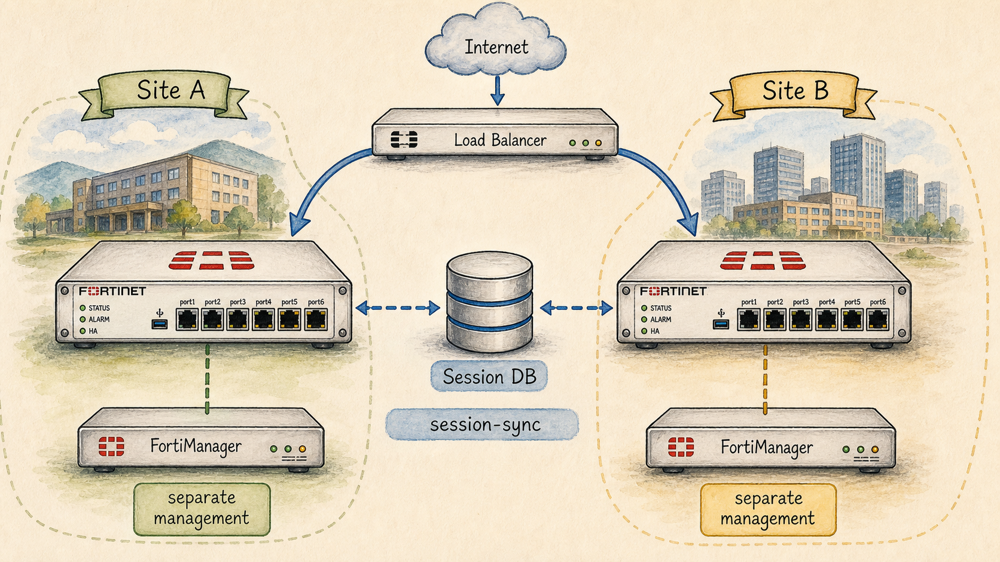

Ready to Begin the Session
| Official NSE7 EF Blueprint Objectives |
|
| Prerequisites | Session 17: FGCP Active-Active & Load Balancing |
| Estimated Duration | 25-30 minutes |
| Phase | Phase 4 — High Availability: FGCP, FGSP, VRRP |
Session 18 — FGSP — Session Synchronization Where we are in the NSE7 journey: FGCP shares everything; FGSP shares just the session table. FGSP is how you give two independent FortiGates the ability to take over each other's flows. The problem we're solving today: FGSP is the answer when devices live in different sites, are managed independently, or sit behind an external load balancer. NSE7 distinguishes FGCP scope from FGSP scope sharply. Session goal: Differentiate FGCP and FGSP in 30 seconds, and design an FGSP topology that sits behind an external load balancer. Key concepts: • FGSP cluster setup • Session sync interface selection • Asymmetric routing tolerance (the FGSP superpower) • UDP vs TCP session sync trade-offs • FGSP + external LB — the canonical pattern
Where We Are in the NSE7 Journey

Two FortiGates in different sites, each with its own FortiManager icon (separate management planes), connected by a 'session-sync' line.
FGCP shares everything; FGSP shares just the session table. FGSP is how you give two independent FortiGates the ability to take over each other's flows.
The Problem We're Solving Today
FGSP is the answer when devices live in different sites, are managed independently, or sit behind an external load balancer. NSE7 distinguishes FGCP scope from FGSP scope sharply.
Key Concepts
- FGSP cluster setup
- Session sync interface selection
- Asymmetric routing tolerance (the FGSP superpower)
- UDP vs TCP session sync trade-offs
- FGSP + external LB — the canonical pattern
What We Discovered Together
Parsed from the persistent session summary produced at the end of the Socratic investigation. Use it to rebuild context before a review or a lab.
Session Information
- Session Number18
- TopicFGSP — Session Synchronization (asymmetric routing tolerance, sync interfaces, TCP/UDP/IPsec sync defaults, FGSP + external LB canonical pattern)
- CertificationFortinet NSE7 Enterprise Firewall 7.6
- DateJuly 2026
Story Progress
Vaultline Financial, continuing the second-datacenter colo build-out first flagged back in Session 15/16/17. Priya got the green light and forwarded the colo team's three non-negotiable conditions: (1) the colo's existing external hardware load balancer stays in front of everything, including the firewalls; (2) the colo team manages their own firewall independently — separate credentials, separate change windows, will not join a shared HA identity; (3) the LB's return-path routing means a reply for a flow can legitimately exit through a different firewall than the one that received it. Priya's direct question: can we just stand up FGT-Colo-1 and FGT-Colo-2 as a normal FGCP active-passive pair?
MAJOR STORY PIVOT: this resolves the long-running "second-datacenter FGCP pair" thread from Sessions 15/16/17 — but not the way earlier sessions assumed. Working through the colo's constraints, the student proved FGCP cannot survive either condition #2 (config sync structurally erases "independently managed") or condition #3 (session ownership is decided internally by the primary; an external LB routing packets wherever it wants has no channel to override that). The second datacenter will be an FGSP deployment, not FGCP — a genuine design pivot rather than a straightforward continuation of the earlier plan.
Outstanding threads carried forward, untouched this session: Priya's FGCP A-A traffic-mix decision (S17), the Meridian branch VRRP final cutover, the VDOM partitioning / virtual clustering implementation debt (S02/S15/S16), the S02 junior engineer template-copy mystery, and the peak-load failover test (S15).
Concepts Learned
2. FGSP's minimum viable shared surface, derived independently by the student: strip away identity, config, and ownership, and the only thing left that can still be shared between two fully independent boxes is the session table itself — literally the protocol's namesake.
3. "Session owner" = the FortiGate that received the session's first packet. Under FGSP, ALL packets for a session — TCP, UDP-with-pickup, IPsec alike — get passed back to the session owner when they land on the wrong peer, uniformly, regardless of session type. There is no special exception for IPsec allowing a non-owner peer to independently decrypt mid-flow while the owner is healthy.
4. Two asymmetric-handback mechanisms, confirmed against the official 7.6 study guide: (a) Layer 2 — requires internal/outgoing interfaces on both peers in the same subnet plus layer2-connection set to available; the misrouted packet is bounced directly to the owner's MAC address; (b) Layer 3 — the default, used when there's no L2 adjacency (e.g. cloud); the packet is wrapped in UDP encapsulation between peer interfaces and delivered to the owner's IP. The student derived the encapsulation concept unprompted, before being told the term.
5. THE core FGSP-vs-FGCP-A-A contrast (student's own phrase: "just 1"): FGCP A-A's 0x8891 relay is structural and permanent — every single inbound packet of a distributed session gets relayed for the session's entire life, symmetric routing or not (Session 17). FGSP's handback is an on-demand exception — only the specific packet that actually lands on the wrong box gets bounced back; out of 1000 packets routed correctly, zero pay any cross-box tax.
6. Sync interface defaults: FGSP peers synchronize sessions over Layer 3 by default, between the interfaces configured with peer IP addresses (config system standalone-cluster / cluster-peer / peerip). A dedicated session-sync-dev interface can be set for Layer 2 sync when peers are directly connected, automatically falling back to Layer 3 if that link fails. Session sync alone requires no L2 connectivity; standalone CONFIG sync (optional, separate feature) does require it.
7. Sync-by-default session types: TCP (IPv4 and IPv6) and IPsec tunnels sync automatically. UDP/ICMP (session-pickup-connectionless), expectation sessions like SIP/FTP pinholes (session-pickup-expectation), and NAT sessions (session-pickup-nat) are opt-in. Reasoning developed in-session: a lost TCP entry is a temporary, self-healing consistency gap — the sender just retransmits until sync catches up — while a UDP "session" is cheap firewall bookkeeping rather than a negotiated conversation, so Fortinet doesn't pay the sync cost for it by default.
8. Sync-channel encryption: config system standalone-cluster / set encryption enable / set psksecret auto-creates an IPsec VPN and policies to protect session-sync traffic — Layer 3 connections only — explicitly useful when sync traffic crosses a shared backbone between datacenters neither team fully controls.
9. Split-brain contrast, fully derived by the student: FGCP split-brain is an identity crisis — two boxes both electing themselves owner of one shared vMAC when the heartbeat drops, requiring active intervention to resolve. A lagging or dropped FGSP sync channel is categorically different — a temporary consistency gap (a stray packet gets dropped as an orphan, TCP retransmits, sync catches up, done) — because FGSP never gave either box an identity to contest in the first place.
My Understanding
Strong- Independently derived the entire minimum-viable-FGSP concept ("Sessions") from three business constraints, with no terms supplied in advance.
- Independently reasoned that FGCP's config-sync requirement is structurally incompatible with "separate change windows" — not just inconvenient, actually impossible — before being told.
- Independently derived tunneling/encapsulation as the answer to "how does a stray packet reach a peer on a different subnet," reasoning from "nothing in the original packet's header points at the peer" to "wrap it in a new outer IP header" — before the term UDP encapsulation was introduced.
- Produced the "just 1" framing unprompted, which became the session's central FGCP-A-A-vs-FGSP contrast.
- Correctly reasoned through the split-brain question end to end: named why FGCP's shared vMAC creates contestable identity, then correctly concluded FGSP has nothing analogous to contest, and correctly predicted the failure mode (dropped orphan packet, self-healing) without being led to it.
- Asked a strong, well-timed tangential question about IPsec SA sync mechanics and requested a real use case — good curiosity signal, and the resulting answer became one of the session's more nuanced exam-relevant points (uniform handback mechanism vs. failover-only benefit of SA sync).
- Initially conflated the SYN/ACK-misrouted case with the mid-stream-data-packet-misrouted case as trivially identical without examining whether anything differs — reasonable simplification, later folded correctly into "ownership is decided once, at the SYN, and doesn't care what position in the conversation a stray packet occupies."
- On UDP vs TCP sync defaults, initially framed the question as "which loss is worse for the application" rather than "which is cheaper to rebuild from scratch" — the mentor reframed the question rather than supplying the answer; the underlying instinct (UDP loss is less bad) was directionally correct even though the framing needed correcting.
- Five separate instances this session of the full custom mentor-instructions block being pasted into the chat, apparently unintentionally (a continuation of the pattern first noted in Session 17). Each time, redirected back to the live question with minimal friction; by the final instances the student had noticed the pattern themselves and flagged it before being told.
Troubleshooting Experience
No dedicated fault-injection scenario this session (concept-heavy per Stage 4 discipline — configuration/troubleshooting depth deliberately deferred). However, the entire colo constraint-elimination exercise functioned as a design-validation troubleshooting exercise: given a target topology and a candidate technology (FGCP), systematically test it against each stated constraint before accepting or rejecting it. This "test the candidate against every constraint, don't stop at the first win" discipline is directly reusable for real design reviews.
Connections
Builds directly on Session 15 (FGSP's original one-paragraph identity: independent peers, session-sync only, external device owns distribution and failure detection) and Session 17 (FGCP A-A's 0x8891 structural relay, used here as the direct contrast object for FGSP's on-demand handback). Resolves the "second-datacenter FGCP pair" thread carried since Session 15/16 — with a pivot to FGSP rather than the FGCP-with-different-group-id design earlier sessions assumed. Sets up a natural Stage 6 configuration-focused follow-up session (standalone-cluster CLI, session-pickup-*, layer2-connection, encryption) now that the conceptual foundation is solid, and reconnects to the still-open VDOM partitioning / virtual clustering thread, which the official curriculum's own Lab 4 pairs directly with FGSP asymmetric traffic — a strong candidate for the next technical arc.
Important Takeaways
- FGCP fails the colo topology for one root reason: it requires an internally-elected decision-maker plus full identity/config coupling — an external LB and independently-managed boxes violate both simultaneously.
- FGSP's only shared surface is the session table. No vMAC, no election, no config sync required for session sync alone.
- Asymmetric handback is on-demand and exception-only (bounced only for the specific misrouted packet, via L2 frame swap or L3 UDP encapsulation) — contrast sharply with FGCP A-A's permanent per-packet 0x8891 relay. This is the single highest-value exam fact from this session.
- TCP + IPsec sync automatically; UDP/ICMP/expectation/NAT sessions are opt-in via session-pickup-*.
- Even with a synced SA, a live misrouted IPsec packet still gets handed back to the owner while the owner is healthy — SA sync is a failover benefit, not a live-processing shortcut.
- FGSP session sync needs no L2 connectivity by default (Layer 3); a dedicated session-sync-dev enables Layer 2 sync with automatic L3 fallback. Standalone config sync (separate, optional) does require L2.
- Sync-channel encryption (IPsec, auto-provisioned via psksecret) is available for Layer 3 sync links — the canonical answer for cross-datacenter session sync.
- FGCP split-brain = identity crisis (two boxes contest one identity, doesn't self-heal). FGSP sync lag = temporary consistency gap (a dropped orphan packet, self-heals via retransmission) — because FGSP never created an identity to contest.
Future Session Notes
- Reinforcement(a) re-quiz cold on session-owner definition and both handback mechanisms (L2 conditions vs L3 default) in 1-2 sessions; (b) re-drill the "just 1" FGCP-A-A-vs-FGSP contrast from memory; (c) revisit session-pickup-* flag names (connectionless/expectation/nat) at recognition level; (d) the FGCP/FGSP/VRRP comparison table was referenced but deserves a dedicated spaced-repetition pass.
- Spaced repetitionin 1 session — cold-open with "LB sends packet 4732 of a healthy tunnel to the wrong peer, SA is synced — what happens?" (tests the failover-vs-live-handback distinction); in 2-3 sessions — full split-brain-vs-consistency-gap contrast redrawn from memory.
- Storynatural next session is FGSP hands-on configuration (standalone-cluster, cluster-peer, session-pickup-*, layer2-connection, encryption) using Vaultline's actual colo IP scheme, since today stayed deliberately conceptual. VDOM partitioning / virtual clustering remains the other strong candidate, and the official curriculum pairs it with FGSP asymmetric traffic in the same lab — worth considering as a combined session. Priya's A-A traffic-mix decision, the Meridian VRRP cutover, and the peak-load failover test all remain open and available whenever a good narrative moment arises.
Audio Podcast Prompt (For "The Packet Path")
Generate a two-host audio podcast script for "The Packet Path," a storytelling podcast for network engineers. Host: Alex, an experienced network security consultant. Co-host: Sam, smart and curious, asks clarifying questions. Tone: intelligent, conversational, true-crime documentary style. Episode title: "The Notebook by the Door." Setting: Vaultline Financial's second-datacenter colo build-out.
Act 1 — The Conditions: the colo team hands over three non-negotiable conditions — their own external load balancer stays, they manage their firewall independently with separate credentials and change windows, and their LB's routing can send a reply through a different firewall than the one that received it. Priya asks: can we just deploy our usual FGCP pair? Alex and Sam walk through why the instinct is reasonable but the colo's demands quietly attack FGCP from two directions at once.
Act 2 — The Elimination: reveal that FGCP's config sync makes "separate change windows" a contradiction in terms, and that FGCP's session-ownership decision is made internally, by the primary — an external device routing packets on its own has no channel into that decision. Sam asks the obvious follow-up: "so what CAN two totally independent boxes share?" — landing on the session table itself, and the reveal that this is literally what FGSP means.
Act 3 — The Handback: introduce the session owner concept and the two ways a misrouted packet gets home — a direct Layer 2 frame bounce when the boxes share a subnet, or UDP encapsulation over Layer 3 when they don't. Contrast this with FGCP Active-Active's permanent per-packet relay from a previous case (referenced, not re-explained) — the twist being that FGSP only pays this cost for the ONE packet that actually goes astray, not for the whole session.
Act 4 — The Verdict: Alex and Sam land on the design decision — the second datacenter will run FGSP, not FGCP, and walk through why that's a genuinely better fit for a colo relationship built on separate ownership rather than a design compromise. Close with the split-brain contrast: FGCP's shared identity can fracture into two competing primaries; FGSP, having no shared identity to begin with, can only ever suffer a brief, self-healing hiccup.
Guides, Bites & Nibbles
Additional resources sorted to this session — deeper guides, focused explainers, and quick-reference cards.